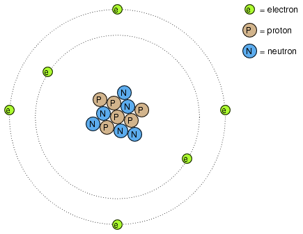
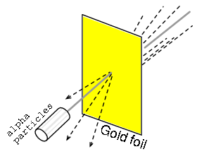
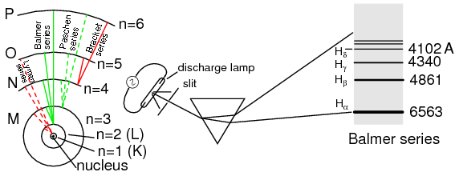

Lecciones de circuitos eléctricos - Volumen III
Capítulo 2
TEORÍA DE DISPOSITIVOS DE ESTADO SÓLIDO
- Introduction
- Quantum physics
- Valence and Crystal structure
- Band theory of solids
- Electrons and “holes”
- The P-N junction
- Junction diodes
- Bipolar junction transistors
- Junction field-effect transistors
- Insulated-gate field-effect transistors (MOSFET)
- Thyristors
- Semiconductor manufacturing techniques
- Superconducting devices
- Quantum devices
- Semiconductor devices in SPICE
- Contributors
- Bibliography
Introduction
Este capítulo cubrirá la física detrás del funcionamiento de los dispositivos semiconductores y mostrará cómo se aplican estos principios en varios tipos diferentes de dispositivos semiconductores. Los capítulos siguientes se ocuparán principalmente de los aspectos prácticos de estos dispositivos en circuitos y omitirán la teoría tanto como sea posible.
Quantum physics
"Creo que es seguro decir que nadie entiende la mecánica cuántica".
El físico Richard P. Feynman
Decir que la invención de los dispositivos semiconductores fue una revolución no sería exagerado. No sólo fue un logro tecnológico impresionante, sino que allanó el camino para avances que alterarían de forma indeleble la sociedad moderna. Los dispositivos semiconductores hicieron posible la electrónica miniaturizada, incluidas las computadoras, ciertos tipos de equipos de diagnóstico y tratamiento médicos y dispositivos de telecomunicaciones populares, por nombrar algunas aplicaciones de esta tecnología.
Pero detrás de esta revolución tecnológica se esconde una revolución aún mayor en la ciencia general: el campo de lafísica cuántica. Sin este salto en la comprensión del mundo natural, el desarrollo de dispositivos semiconductores (y dispositivos electrónicos más avanzados aún en desarrollo) nunca habría sido posible. La física cuántica es un ámbito de la ciencia increíblemente complicado. Este capítulo no es más que una breve descripción. Cuando científicos del calibre de Feynman dicen que “nadie lo entiende”, pueden estar seguros de que se trata de un tema complejo. Sin embargo, sin una comprensión básica de la física cuántica, o al menos una comprensión de los descubrimientos científicos que llevaron a su formulación, es imposible entender cómo y por qué funcionan los dispositivos electrónicos semiconductores. La mayoría de los libros de texto de introducción a la electrónica que he leído intentan explicar los semiconductores en términos de física “clásica”, lo que genera más confusión que comprensión.
Muchos de nosotros hemos visto diagramas de átomos que se parecen a la Figura below.
{kind=link}

Átomo de Rutherford: los electrones negativos orbitan alrededor de un pequeño núcleo positivo.
Pequeñas partículas de materia llamadasprotones and neutronesforman el centro del átomo;electronesorbitan como planetas alrededor de una estrella. El núcleo lleva una carga eléctrica positiva, debido a la presencia de protones (los neutrones no tienen carga eléctrica alguna), mientras que la carga negativa de equilibrio del átomo reside en los electrones en órbita. Los electrones negativos son atraídos por los protones positivos del mismo modo que los planetas son atraídos gravitacionalmente por el Sol, pero las órbitas son estables debido al movimiento de los electrones. Este popular modelo del átomo se lo debemos al trabajo de Ernest Rutherford, quien alrededor del año 1911 determinó experimentalmente que las cargas positivas de los átomos estaban concentradas en un núcleo diminuto y denso en lugar de distribuirse uniformemente alrededor del diámetro como había propuesto un investigador anterior, J.J. Thompson.
El experimento de dispersión de Rutherford implicó bombardear una fina lámina de oro con partículas alfa cargadas positivamente como en la Figura below. Los jóvenes estudiantes de posgrado H. Geiger y E. Marsden experimentaron resultados inesperados. Algunas partículas Alfa fueron desviadas en grandes ángulos. Algunas partículas Alfa se estaban retrodispersando, retrocediendo a casi 180o. La mayoría de las partículas atravesaron la lámina de oro sin desviarse, lo que indica que la lámina era en su mayor parte un espacio vacío. El hecho de que unas pocas partículas alfa experimentaran grandes desviaciones indicaba la presencia de un minúsculo núcleo cargado positivamente.
{kind=link}

Dispersión de Rutherford: un haz de partículas alfa es dispersado por una fina lámina de oro.
Aunque el modelo atómico de Rutherford representaba los datos experimentales mejor que el de Thompson, todavía no era perfecto. Se llevaron a cabo nuevos intentos de definir la estructura atómica, y estos esfuerzos ayudaron a allanar el camino para los extraños descubrimientos de la física cuántica. Hoy nuestra comprensión del átomo es bastante más compleja. Sin embargo, a pesar de la revolución de la física cuántica y su contribución a nuestra comprensión de la estructura atómica, la imagen del átomo del sistema solar de Rutherford se incrustó en la conciencia popular hasta tal punto que persiste en algunas áreas de estudio incluso cuando es inapropiada.
Considere esta breve descripción de los electrones en un átomo, extraída de un popular libro de texto de electrónica:
Por lo tanto, los electrones negativos en órbita son atraídos hacia el núcleo positivo, lo que nos lleva a la pregunta de por qué los electrones no vuelan hacia el núcleo del átomo. La respuesta es que los electrones en órbita permanecen en su órbita estable debido a dos fuerzas iguales pero opuestas. La fuerza centrífuga hacia afuera ejercida sobre los electrones debido a la órbita contrarresta la fuerza de atracción hacia adentro (centrípeta) que intenta atraer a los electrones hacia el núcleo debido a las cargas diferentes.
De acuerdo con el modelo de Rutherford, este autor considera a los electrones como trozos sólidos de materia en órbitas circulares, cuya atracción interna hacia el núcleo con carga opuesta se equilibra con su movimiento. La referencia a la “fuerza centrífuga” es técnicamente incorrecta (incluso para planetas en órbita), pero se perdona fácilmente debido a su aceptación popular: en realidad, no existe nada parecido a una fuerza que empujeanycuerpo en órbitalejosdesde su centro de órbita. Parece así porque la inercia de un cuerpo tiende a mantenerlo viajando en línea recta, y dado que una órbita es una desviación (aceleración) constante del viaje en línea recta, existe una oposición inercial constante a cualquier fuerza que atraiga al cuerpo hacia el centro de la órbita (centrípeta), ya sea gravedad, atracción electrostática o incluso la tensión de un enlace mecánico.
Sin embargo, el verdadero problema con esta explicación es, en primer lugar, la idea de que los electrones viajen en órbitas circulares. Es un hecho comprobable que las cargas eléctricas aceleradas emiten radiación electromagnética, y este hecho se conocía incluso en la época de Rutherford. Dado que el movimiento orbital es una forma de aceleración (el objeto en órbita está en aceleración constante lejos del movimiento normal y rectilíneo), los electrones en estado orbital deberían estar emitiendo radiación como el barro de una llanta que gira. Los electrones se aceleran siguiendo trayectorias circulares en aceleradores de partículas llamadossincrotronesse sabe que hacen esto, y el resultado se llamaradiación sincrotrón. Si los electrones perdieran energía de esta manera, sus órbitas eventualmente decaerían, resultando en colisiones con el núcleo cargado positivamente. Sin embargo, esto no suele ocurrir dentro de los átomos. De hecho, las “órbitas” de los electrones son notablemente estables en una amplia gama de condiciones.
Además, los experimentos con átomos "excitados" demostraron que la energía electromagnética emitida por un átomo sólo ocurre en ciertas frecuencias definidas. Se sabe que los átomos que son “excitados” por influencias externas, como la luz, absorben esa energía y la devuelven como ondas electromagnéticas de frecuencias específicas, como un diapasón que suena con un tono fijo sin importar cómo se golpee. Cuando la luz emitida por un átomo excitado se divide en sus frecuencias constituyentes (colores) mediante un prisma, aparecen distintas líneas de color en el espectro, siendo el patrón de líneas espectrales exclusivo de ese elemento. Este fenómeno se utiliza comúnmente para identificar elementos atómicos, e incluso medir las proporciones de cada elemento en un compuesto o mezcla química. Según el modelo atómico del sistema solar de Rutherford (que considera a los electrones como trozos de materia libres de orbitar en cualquier radio) y las leyes de la física clásica, los átomos excitados deberían devolver energía en un rango prácticamente ilimitado de frecuencias en lugar de unos pocos seleccionados. En otras palabras, si el modelo de Rutherford fuera correcto, no habría ningún efecto de “diapasón” y el espectro de luz emitido por cualquier átomo aparecería como una banda continua de colores en lugar de como unas pocas líneas distintas.

El átomo de hidrógeno de Bohr (con órbitas dibujadas a escala) solo permite que los electrones habiten orbitales discretos. Los electrones que caen de n=3,4,5 o 6 a n=2 representan la serie de líneas espectrales de Balmer.
Un investigador pionero llamado Niels Bohr intentó mejorar el modelo de Rutherford después de estudiar en el laboratorio de Rutherford durante varios meses en 1912. Tratando de armonizar los hallazgos de otros físicos (en particular, Max Planck y Albert Einstein), Bohr sugirió que cada electrón tenía una cantidad determinada y específica de energía, y que sus órbitas erancuantificadode modo que cada uno puede ocupar ciertos lugares alrededor del núcleo, como antes se imaginaba que eran las canicas fijadas en pistas circulares alrededor del núcleo en lugar de los satélites en libertad. (Cifra above) En deferencia a las leyes del electromagnetismo y las cargas aceleradoras, Bohr aludió a estas “órbitas” comoestados estacionariospara escapar de la implicación de que estaban en movimiento.
{kind=link}
Aunque el ambicioso intento de Bohr de reformular la estructura del átomo en términos que se acercaran más a los resultados experimentales fue un hito en la física, no fue completo. Su análisis matemático produjo mejores predicciones de eventos experimentales que los análisis pertenecientes a modelos anteriores, pero aún quedaban algunas preguntas sin respuesta sobrewhyLos electrones deberían comportarse de maneras tan extrañas. La afirmación de que los electrones existían en estados estacionarios y cuantificados alrededor del núcleo explicaba los datos experimentales mejor que el modelo de Rutherford, pero no tenía idea de qué obligaría a los electrones a manifestar esos estados particulares. La respuesta a esa pregunta tuvo que venir de otro físico, Louis de Broglie, aproximadamente una década después.